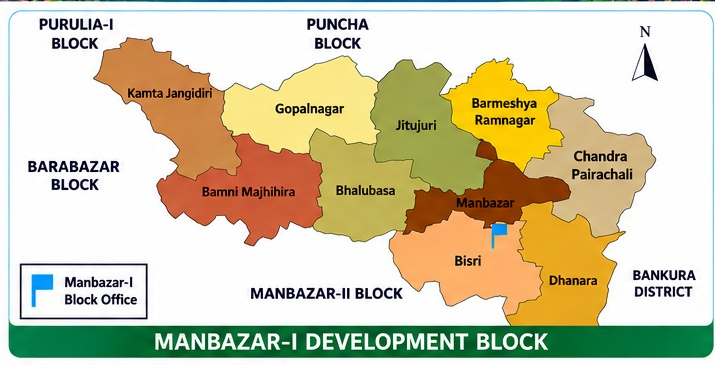

মানবাজার-I সমষ্টি উন্নয়ন ব্লক
Manbazar-I Development Block · Purulia, West Bengal
মানবাজার ১ (Manbazar-I) হলো ভারতের পশ্চিমবঙ্গ রাজ্যের পুরুলিয়া জেলার মানবাজার মহকুমার অন্তর্গত একটি সমষ্টি উন্নয়ন ব্লক (Community Development Block)। এই ব্লকটি প্রাকৃতিক সৌন্দর্য, সমৃদ্ধ ঐতিহ্য, কৃষিভিত্তিক অর্থনীতি এবং আদিবাসী সংস্কৃতির জন্য পরিচিত।
| 📍 সদর দপ্তর | মানবাজার |
| 👥 গ্রাম পঞ্চায়েত | ১০টি |
| 🏠 মৌজা | ২৪৪টি |
| 🏘️ জনবসতিপূর্ণ গ্রাম | ২১৯টি |
| 🏙️ জনগণনা নগর | ১টি |
৭৮,০৩৯ (৫১%)
৭৬,০৩২ (৪৯%)
| তফসিলি জাতি (SC) | ২২.৮৮% |
| তফসিলি উপজাতি (ST) | ২২.০০% |
| প্রধান ভাষা | বাংলা (৬৭.৪৯%), সাঁওতালি (১২.২৬%) |
| প্রধান ধর্ম | হিন্দু (৮৫.৬২%), মুসলিম (৩.০৪%), আদিবাসী/অন্যান্য (১১.৩১%) |

| প্রাথমিক বিদ্যালয় | ১৯৭টি |
| মিডল স্কুল | ২২টি |
| হাই স্কুল | ৩টি |
| হায়ার সেকেন্ডারি | ১৪টি |
🏫 বিদ্যালয় (মানবাজার)
- মানবাজার রাধামাধব ইনস্টিটিউশন (R.M. Institution)
- মানবাজার গার্লস হাই স্কুল
- স্বপন সুরত হাই স্কুল
- পি.ডি.জি.এম. হাই স্কুল
🏫 উচ্চ শিক্ষা (কলেজ)
মানবাজার মহাবিদ্যালয়, মানবাজার (সিধো-কানহো-বীরসা বিশ্ববিদ্যালয়ের অধিভুক্ত) — আর্টস, সায়েন্স ও কমার্স অনার্স ও জেনারেল কোর্স।
🏥 মানবাজার গ্রামীণ হাসপাতাল
(Manbazar Rural Hospital) — মানবাজার শহরে অবস্থিত। শয্যা সংখ্যা: ৪০টি।
🩺 প্রাথমিক স্বাস্থ্য কেন্দ্র (PHC)
- কুমড়া প্রাথমিক স্বাস্থ্য কেন্দ্র (মোড়া পোস্ট অফিসের অধীন) — শয্যা সংখ্যা: ৪টি।
- পাইরাচালি প্রাথমিক স্বাস্থ্য কেন্দ্র — শয্যা সংখ্যা: ১০টি।
এছাড়া ব্লকের বিভিন্ন প্রান্তিক এলাকায় একাধিক সরকারি উপ-স্বাস্থ্য কেন্দ্র (Sub-centres) রয়েছে।
| অবস্থান | পুরুলিয়া জেলার পূর্বাংশে |
| উত্তরে | পুঞ্চা ব্লক |
| পূর্বে | বাঁকুড়া জেলার হিড়বাঁধ ব্লক |
| দক্ষিণে | মানবাজার-II ব্লক |
| পশ্চিমে | বারাবাজার ব্লক |
| আয়তন | প্রায় ৩৮১.৩২ বর্গকিলোমিটার |
কংসাবতী নদী এই ব্লকের উপর দিয়ে প্রবাহিত হয়ে কংসাবতী জলাধারে পড়েছে। কংসাবতী প্রকল্পের কারণে মানবাজার অঞ্চলের বিভিন্ন এলাকা প্রভাবিত হয়েছিল।
শিব মন্দির
বুঢ়েশ্বর শিব মন্দির (বুধপুর)
বুধপুর গ্রামে কংসাবতী নদীর উত্তর তীরে দ্বাদশ-ত্রয়োদশ শতাব্দীর নাগারা শৈলীর ধ্বংসপ্রায় বুঢ়েশ্বর শিব মন্দির চত্বর।
বারোমাস্যা
ব্লকের অন্তর্গত বারোমাস্যা একটি পরিচিত প্রত্নস্থল।
দোলাডাঙ্গা (Doladanga)
প্রাকৃতিক সৌন্দর্যে ভরপুর দোলাডাঙ্গা ব্লকের একটি জনপ্রিয় পর্যটন কেন্দ্র। পাহাড়, জলাশয় এবং প্রাকৃতিক দৃশ্যের জন্য এটি পর্যটকদের কাছে আকর্ষণীয়।
📌 Manbazar-I — Nature, Heritage & Development